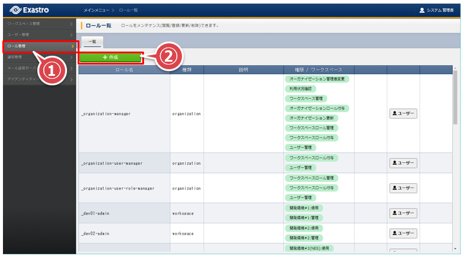
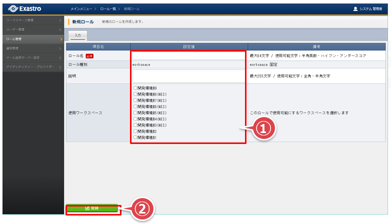
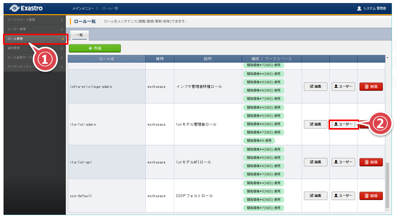
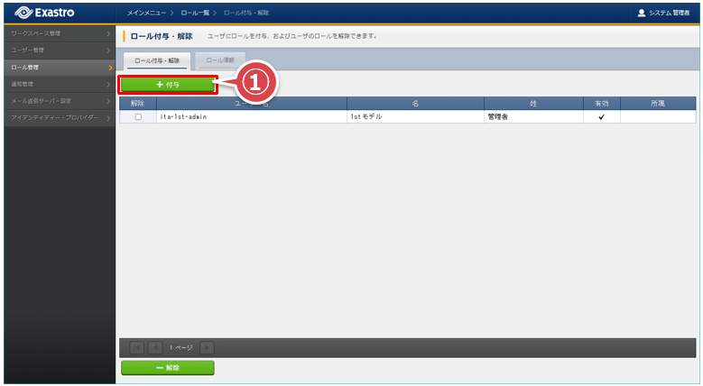
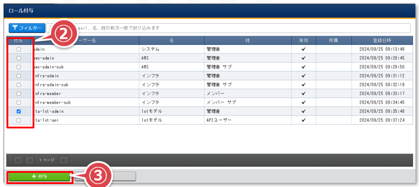
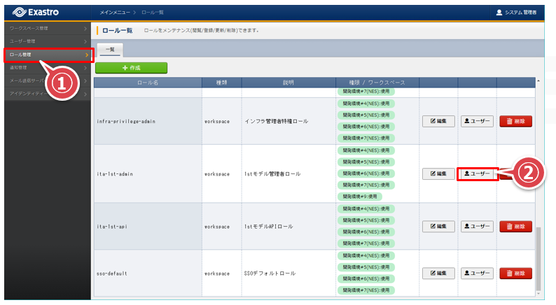
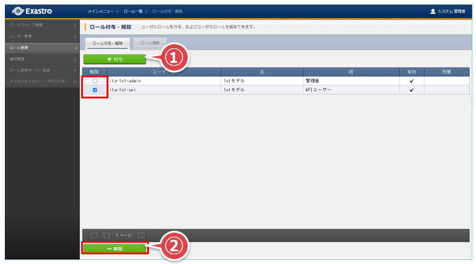

4. ロール一覧¶
4.1. ロール一覧¶
1stモデルに初期登録するロールの一覧を示す。
ロール名、紐付ユーザー名は変更可。
ロール名 |
説明 |
紐付ユーザー名 |
権限概要 |
|---|---|---|---|
ita-1st-admin |
1stモデル管理者ロール |
ita-1st-admin |
・1stモデルの全体に関する設定変更権限
・AWS管理者作成に必要な操作権限
・AWS管理者の作成
|
ita-1st-api |
1stモデルAPIロール |
ita-1st-api |
以下メニューの操作権限
「機器一覧」
「ホストグループ一覧」
「ホスト紐付管理」
「Webサーバ」
|
aws-admin |
AWS管理者ロール |
aws-admin
aws-admin-sub
|
・インフラユーザー作成に必要なメニューの操作権限
・Conductor実行
|
infra-privilege-admin |
インフラ管理者特権ロール |
infra-admin |
・プレイブック編集
・テンプレートファイル編集
・メニュー作成
|
infra-admin |
インフラ管理者ロール |
infra-admin
infra-admin-sub
|
・パラメータ管理
・Conductor実行
|
infra-member |
インフラメンバーロール |
infra-member
infra-member-sub
|
・各メニューの閲覧権限
|
4.2. 初期ロールの登録¶
登録が必要な初期ロールは「Ⅰ.1stモデル概要 / 4.ロール一覧」を参照
オーガナイゼーション管理画面の「ロール管理」へ移動して「作成」ボタンを押下する
 必要な項目を記入して「登録」ボタンを押下する

4.3. ロール－ユーザーの紐付け¶
ロール－ユーザーの紐付けは「Ⅰ.1stモデル概要 / 4.ロール一覧」を参照
オーガナイゼーション管理画面の「ロール管理」へ移動して対象の「ユーザー」ボタンを押下する。 以下は”1stモデル管理者ロール”の場合
 「付与」ボタンを押下する
 「ロール付与」ポップアップ画面でロールを付与するユーザーをチェックし「付与」ボタンを押下する

4.4. ロール－ユーザーの紐付け解除方法¶
オーガナイゼーション管理画面の「ロール管理」へ移動して対象の「ユーザー」ボタンを押下する 以下は”1stモデル管理者ロール”の場合
 ロールの紐付けを解除するユーザーの「解除」をチェックし「解除」ボタンを押下する
